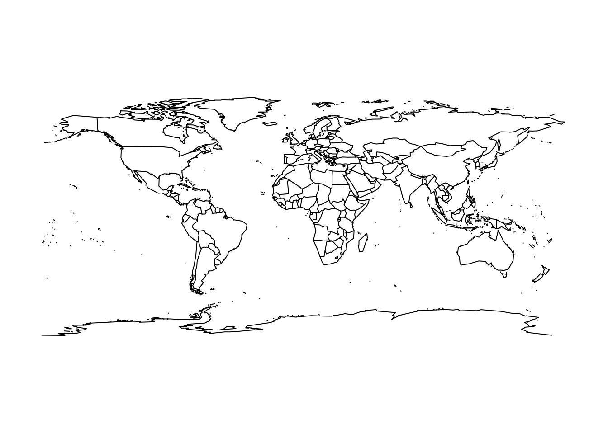

Chapter3 Day 3
3.1 Anouncements
Course audits
Show gitHub page for site https://github.com/jtipton25/STAT-5413
- Show how to download files and data
Example Gerrymandering
## Loading required package: sysfonts## Loading required package: showtextdb3.2 Files for spatial data
Many different file types for spatial data
Typically data are in “flat files” like comma-seperated value (CSV) files
- “shapefiles” which can be read using rgdal or maptools packages
- “NetCDF” files cane be read using ncdf4 or RNetCDF
3.3 Textbook package
To install the data from the textbook, go to https://spacetimewithr.org/ and follow the link to the code.
Note that this package is relatively large because it contains a decent amount of spatial data.
##
## Attaching package: 'STRbook'## The following object is masked _by_ '.GlobalEnv':
##
## MOcounties3.4 Spatial Visualization
3.4.1 Spatial visualization using fields
- Simulate a process with some random locations
## Loading required package: spam## Loading required package: dotCall64## Loading required package: grid## Spam version 2.7-0 (2021-06-25) is loaded.
## Type 'help( Spam)' or 'demo( spam)' for a short introduction
## and overview of this package.
## Help for individual functions is also obtained by adding the
## suffix '.spam' to the function name, e.g. 'help( chol.spam)'.##
## Attaching package: 'spam'## The following objects are masked from 'package:base':
##
## backsolve, forwardsolve## Loading required package: viridis## Loading required package: viridisLite##
## Try help(fields) to get started.## longitude and latitude of approximately the center of Arkansas
lon_lat_center <- c(-92.33, 35.00)
n <- 1000
## simulate some random locations
lon <- runif(n, lon_lat_center[1] - 2, lon_lat_center[1] + 2)
lat <- runif(n, lon_lat_center[2] - 2, lon_lat_center[2] + 2)
y <- rnorm(n, lat + lon, 0.1)
plot(lon, lat)


- Simulate a process on a regular grid
n <- 50^2
## simulate locations on a grid
lon <- seq(lon_lat_center[1] - 2, lon_lat_center[1] + 2, length = sqrt(n))
lat <- seq(lon_lat_center[2] - 2, lon_lat_center[2] + 2, length = sqrt(n))
s <- expand.grid(lon, lat)
head(lon)## [1] -94.33000 -94.24837 -94.16673 -94.08510 -94.00347 -93.92184## [1] 33.00000 33.08163 33.16327 33.24490 33.32653 33.40816## Var1 Var2
## 1 -94.33000 33
## 2 -94.24837 33
## 3 -94.16673 33
## 4 -94.08510 33
## 5 -94.00347 33
## 6 -93.92184 33
## simulate some fake data with a north/south trend
y <- 120 - 1.5 * s[, 2] + matrix(rnorm(n), sqrt(n), sqrt(n))
image.plot(lon, lat, y, main = "Plot of simulated data")

image.plot(lon, lat, y, main = "Plot of simulated data")
contour(lon, lat, y, main = "Contour plot of simulated data", add = TRUE,
nlevels = 10)
##
## Attaching package: 'maps'## The following object is masked from 'package:viridis':
##
## unemp## The following object is masked from 'package:purrr':
##
## map
## [1] "texas" "texas" "texas" "texas" "louisiana" "louisiana"## state
## arkansas louisiana mississippi missouri texas
## 1903 34 180 351 32## subset only points in arkansas
dat <- data.frame(
lon = s[, 1],
lat = s[, 2],
state = state
)
maps::map("county", "Arkansas")
dat %>%
subset(state == "arkansas") %>%
points(cex = 0.3)Plot the simulated data with the county boundaries

## change the aspect ratio
image.plot(lon, lat, y, main = "Plot of simulated data", asp = 1.3)
maps::map("county", add = TRUE, lwd = 2)